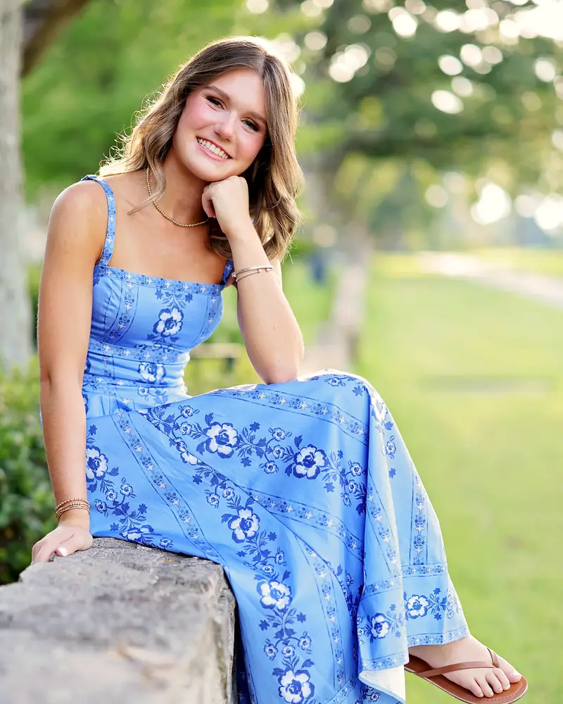

I'm Lily Butler, and I paint cells
I'm a senior at Episcopal Collegiate School in Little Rock. I've worked in a cancer research lab, shown a painting at the Arkansas Museum of Fine Arts and built a peer tutoring program, and Petri Palette brings all three together.

- 176 hrsof cancer research at UAMS the summer before senior year
- AMFAone of my paintings was shown at the Arkansas Museum of Fine Arts in ninth grade
- 2Best in Class awards in science: Biology in ninth grade, Genetics in eleventh
Six weeks in a cancer research lab
The summer before my senior year, I was a Jackson T. Stephens Summer Science Scholar at the University of Arkansas for Medical Sciences. I spent six weeks of full days in a lab studying metastatic melanoma and ER stress, about 176 hours in all, and ran my own research project there.
ER stress happens when the endoplasmic reticulum, the part of the cell that folds new proteins, is overloaded. At the end of the program I presented my research to judges at the UAMS undergraduate research symposium.


A painting at the Arkansas Museum of Fine Arts
In ninth grade, one of my paintings was shown at the Arkansas Museum of Fine Arts. That same year I won Best in Class in Biology, and in eleventh grade I won it in Genetics.
Petri Palette puts those two interests on the same canvas. I paint the cells and processes that are hardest to imagine, so more students can see that science is within their reach.
Helping classmates learn
I'm vice president of our National Honor Society chapter, where I built and run the peer tutoring program.
I also tutor at Episcopal's Writing Center. As its director of online operations, I built the website and scheduling system that more than 450 students use to book appointments.

Outside the lab and the studio
Varsity soccer captain
I play midfield and captain our varsity team this year. We won the state championship my freshman year.
Episcopaws
I helped found our school's dog club and serve as treasurer. We've raised more than $2,000, volunteer with four local organizations and turn old school uniforms into dog toys.
Latin Club scribe
I've been in Latin Club since ninth grade and earned Maxima Cum Laude on the National Latin Exam.
Start with the Goggle Series
Cancer cells, flat cells and sickle cells open my exhibit, followed by mitosis and the path from gene to protein.